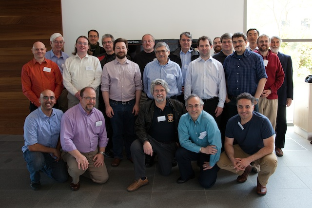

Project members
The CTSRD project is a collaboration between the SRI International Computer Science
Laboratory and the University of
Cambridge Computer Laboratory, supported by grants from DARPA and Google.
The project is led by Dr Peter Neumann (SRI) and Dr Robert Watson (Cambridge).
This page lists current and past researchers involved in the CTSRD project.

SRI International - Computer Science Laboratory (CSL)
Past project members
- Dr Nirav Dave
- Asif Khan (intern)
- Myron King (intern)
- Dr Hassen Saidi
- Richard Uhler (intern)
University of Cambridge - Computer Laboratory
Security group
- Dr Robert N.M. Watson
(Principal Investigator)
- Hesham Almatary (PhD student)
- Ruslan Bukin (research engineer)
- Jessica Clarke (PhD student)
- Lawrence Esswood (PhD student)
- Wes Filardo (postdoc)
- Brett Gutstein (PhD student)
- Ben Laurie (industrial fellow)
- Alfredo Mazzinghi (PhD student)
- Edward Napierala (research engineer)
- Lucian Paul-Trifu (research assistant)
- Alex Richardson (PhD student)
- Dr Michael Roe (senior postdoc)
- Andrew Turner (research engineer)
Computer architecture group
Other groups
Past project members
- Bjoern A. Zeeb (PhD
student)
- Dr Jonathan Anderson (postdoc)
- Prof. Ross Anderson
- David Brazdil (part III student)
- Dr David Chisnall
(now at Microsoft Research)
- Peter Conn (part III student)
- Dr Khilan Gudka (postdoc)
- Dr Steven Hand
- Chris Kitching (research assistant)
- Wojciech Koszek (intern)
- Dr Anil Madhavapeddy
- Ilias Marinos (PhD student)
- Ed Maste (consultant)
- Dr Andrew Moore
- Will Morland (intern)
- Alan Mujumdar (PhD student)
- Dr Steven Murdoch
(postdoc)
- Philip Paeps (consultant)
- Colin Rothwell (PhD student)
- Muhammad Shahbaz (research assistant)
- Stacey Son (consultant)
- Munraj Vadera (research assistant)
- Philip Withnall (part III student)
External advisory group
The CTSRD project's external advisory group provides information review and
guidance for the project.
Its last meeting was in Cambridge UK in May 2011; a group photo including
many members of the CTSRD team can be found below, in front of the CAP
Computer – the last capability machine built at Cambridge in the
1970s!
